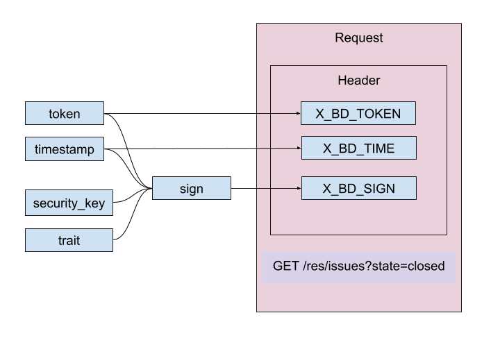
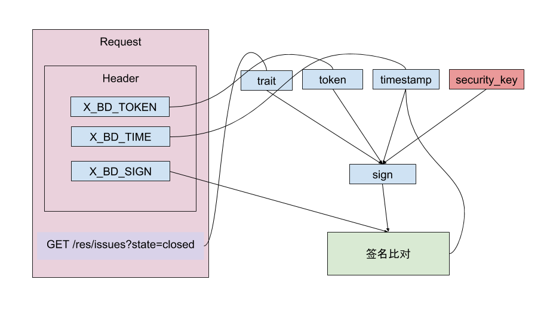

API 规范
通信协议目前采用标准的 SSL HTTP 1.1 协议方式。在通信过程中，为了统一字符集，数据报文采用 UTF-8 编码格式传送，发送请求报文返回报文统一使用 JSON，编码为 UTF-8。
接口设计，遵守 RESTful 规范，URL中只使用名词来指定资源，原则上不使用动词，比如：
- http://api.example.com/v1/newsfeed: 获取某人的新鲜;
- http://api.example.com/v1/friends: 获取某人的好友列表;
- http://api.example.com/v1/user: 获取当前用户的详细信息;
- http://api.example.com/v1/users/1: 获取 id 为 1 的用户的详细信息;
注意，服务器除了实现标准 RESTful API 外，还需根据具体业务需求，提供一些简化接口，方便客户端使用。
HTTP 动词
接口应使用 HTTP 动词来表示对资源的操作（CRUD），具体如下
- GET 获取资源
- POST 新建资源
- PATCH 局部更新资源
- PUT 替换资源或集合
- DELETE 删除资源
参数
对于一些采用可选参数的 API 方法，参数传递的方法如下：
对于 GET 请求，任何不作为 URL 路径中的段（segment）的参数来说，都可以作为 HTTP 请求参数传递：
https://api.github.com/repos/vmg/redcarpet/issues?state=closed
在这个例子，vmg 和 redcarpet 便是作为段来传递（segement），可选参数 state 则作为 HTTP 请求参数传递。
对于 POST、PATCH、PUT、DELETE 来说，不作为段（segement）来传递的参数，应该使用 JSON 传递，客户端请求时应注意设置 Content-Type 为 application/json。注意 body 中无参数时不应该添加Content-Type:application/json。
对于列表数据，如果支持分页或排序筛选等功能，应使用如下的标准参数命名:
?limit=10：指定返回记录的数量?offset=10：指定返回记录的开始位置。?page=2&per_page=100：指定第几页，以及每页的记录数。?sortby=name&order=asc：指定返回结果按照哪个属性排序，以及排序顺序。?animal_type_id=1：指定筛选条件
返回结果与状态码
针对不同操作，如果请求结果为 2XX 服务器向用户返回的结果应该符合以下规范:
- GET /collection：返回资源对象的列表（数组）
- GET /collection/resource：返回单个资源对象
- POST /collection：返回新生成的资源对象
- PUT /collection/resource：返回完整的资源对象
- PATCH /collection/resource：返回完整的资源对象
- DELETE /collection/resource：返回一个空文档
如果请求结果为 4XX，就应该向用户返回出错信息，出错格式信息如下：
{
message: "找不到资源"
}
接口请求结果的状态码，用 HTTP 状态码表示，详细的 HTTP 状态码如下：
200 OK - [GET]：服务器成功返回用户请求的数据，该操作是幂等的（Idempotent）。
201 CREATED - [POST/PUT/PATCH]：用户新建或修改数据成功。
202 Accepted - [*]：表示一个请求已经进入后台排队（异步任务）
204 NO CONTENT - [DELETE]：用户删除数据成功。
400 INVALID REQUEST - [POST/PUT/PATCH]：用户发出的请求有错误，服务器没有进行新建或修改数据的操作，该操作是幂等的。
401 Unauthorized - [*]：表示用户没有权限（令牌、用户名、密码错误）。
403 Forbidden - [*] 表示用户得到授权（与401错误相对），但是访问是被禁止的。
404 NOT FOUND - [*]：用户发出的请求针对的是不存在的记录，服务器没有进行操作，该操作是幂等的。
406 Not Acceptable - [GET]：用户请求的格式不可得（比如用户请求JSON格式，但是只有XML格式）。
410 Gone -[GET]：用户请求的资源被永久删除，且不会再得到的。
422 Unprocesable entity - [POST/PUT/PATCH] 当创建一个对象时，发生一个验证错误。
500 INTERNAL SERVER ERROR - [*]：服务器发生错误，用户将无法判断发出的请求是否成功。
接口安全规范
为了增加伪造报文的难度，除了认证接口外的所有接口必须对请求进行签名，服务器接收到请求后需对签名进行校验，签名不通过的请求一律予以拦截，并返回 400 表示该请求非法。
算法描述：
签名: sign = f(token, security_key, timestamp, trait)
- token：为用户认证返回的 token，比如 oauth2 的
access_token - security_key: 代码保存 key1，通过服务器认证接口获取 key2，
security_key = key1 ^ key2 - timestamp: 为发起请求瞬间的 UTC 时间，客户端须确保本地的 UTC 时间已和服务器的 UTC 时间做好同步
- trait: 表示当前 API 的特征，以
https://api.github.com/repos/vmg/redcarpet/issues?state=closed为例，trait = path + query = "/repos/vmg/redcarpet/issues?state=closed"，注意 HTTP 查询参数的顺序两端需保持一致，可以用文档顺序或字母顺序（TODO 需配合 RN 实现的难易度决定）。 - f：摘要算法，使用
HmacSHA256摘要算法，伪码如下：safeBase64(hmacDigest(token+security+timestamp+trait))
客户端实现：
token、timestamp、sign 为通传参数，客户端除认证接口外，所有请求都必须携带这三个参数，否则请求将被视为非法请求。通传参数通过 Header 传递，分别对应：
- X_BD_TOKEN
- X_BD_TIME
- X_BD_SIGN
具体流程如下图：

服务端实现：
服务端收到请求后，从 Header 获取token、timestamp、client_sign。应当首先验证 token 是否有效，无效则终止请求并返回 401。有效则继续下一步签名校验，通过签名算法 f(token, security_key, timestamp, trait) 求出 server_sign，比对 client_sign 与 server_sign 是否一致。如不一致返回非法请求 400，一致的情况下还须注意客户端上传的时间戳与服务器的当前时间不应超过1 分钟，以防止重放攻击。验证通过后才可进行接口逻辑的处理。
具体流程如下图：

接口认证规范
服务端使用 OAuth2.0 接口对客户端进行认证。对于注册用户使用密码模式进行认证，对于游客使用客户端模式进行认证。
服务端开放认证端口
- /oauth2/secure_access_token
- /oauth2/refresh_token
/oauth2/secure_access_token
请求头
| 参数名称 | 是否必须 | 默认值 | 描述 |
|---|---|---|---|
| Authorization | true | 如: Basic MTM1NDQ0NTIyMjc6MQ== 公式: BASE64算法(client_id+冒号+client_secret) | |
| Content-Type | true | application/x-www-form-urlencoded |
请求参数
| 参数名称 | 是否必须 | 类型 | 默认值 | 描述 |
|---|---|---|---|---|
| grant_type | true | string | password | 授权方式，如果是游客认证应为 client_credentials |
| username | false | string | 用户账号 | |
| password | false | string | ||
| platform | false | string | [android,ios] | |
| uuid | false | string | 游客必传，为 imei 或其他确保设备唯一性的 id | |
| state | true | string | 附带参数（保留） | |
| client_id | true | string | 授权客户端 id | |
| client_secret | true | string | 授权客户端密钥 |
响应数据
| 参数名称 | 是否必须 | 类型 | 描述 |
|---|---|---|---|
| access_token | true | string | 接口对接的token |
| refresh_token | true | string | 刷新token |
| expires_in | true | string | token 存活时间 |
| scope | false | 保留，可用于区分游客，vip，和普通用户 | |
| security_key | true | string | 16 进制的 256位串，该处不是时间的 skey，而是 key2，用于迷惑骇客 |
oauth2/refresh_token
请求头
| 参数名称 | 是否必须 | 默认值 | 描述 |
|---|---|---|---|
| Authorization | true | 如: Basic MTM1NDQ0NTIyMjc6MQ== 公式: BASE64算法(client_id+冒号+client_secret) | |
| Content-Type | true | application/x-www-form-urlencoded |
请求参数
| 参数名称 | 是否必须 | 类型 | 默认值 | 描述 |
|---|---|---|---|---|
| grant_type | true | string | refresh_token | |
| refresh_token | true | string | ||
| state | true | string | 附带参数（保留） |
响应数据
| 参数名称 | 是否必须 | 类型 | 描述 |
|---|---|---|---|
| access_token | true | string | 接口对接的token |
| refresh_token | true | string | 刷新token |
| expires_in | true | string | token 存活时间 |
| scope | false | 保留，可用于区分游客，vip，和普通用户 | |
| security_key | true | string | 16 进制的 256位串，该处不是时间的 skey，而是 key2，用于迷惑骇客 |